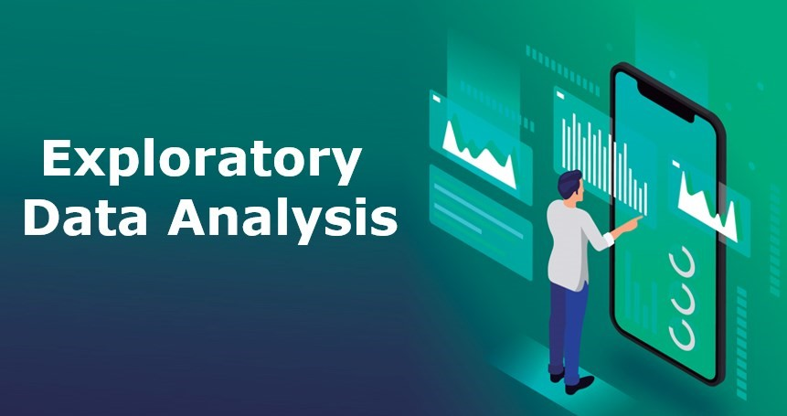

FYP Project
Depression Detection System Based On ML And NLP Using Twitter Analysis
This project employed NLTK for text preprocessing, pandas, matplotlib, and wordcloud for data aggregation and visualization, conducted sentiment analysis using NLTK's SentimentIntensityAnalyzer, utilized KMeans and Hierarchical clustering algorithms and compare them.
Personal Project
Power BI Super Store Sales Dashboard
This Project contains a comprehensive dashboard for analyzing and visualizing Super Store sales data.
Personal Project
EDA Software House In Pakistan 2023

This project utilized data preprocessing and conducted in-depth EDA using seaborn and matplotlib.pyplot to gain insights into various aspects of the software house dataset.
Personal Project
WEB SCRAPING AMAZON PRODUCT REVIEW

This project involved web scraping of Amazon product reviews using BeautifulSoup and requests libraries, followed by data cleaning to preprocess the text data for analysis. Subsequently, sentiment analysis was conducted using the TextBlob library to classify reviews as positive, negative, or neutral. Finally, the sentiment distribution was visualized using matplotlib to provide an organized and comprehensive overview of the sentiment distribution across the reviews.
Personal Project
SQL Analysis of PK Covid19 Dataset

This project contains a SQL analysis of the COVID-19 dataset for Pakistan. The dataset includes key information such as Date, Cases, Deaths, Recovered, Travel_history, Province, and City.
Personal Project
EDA and Dashboard of Dataset BikeSale using Excel
This project involved cleaning data, organizing it into useful summaries with pivot tables, and then creating a dashboard to easily visualize and understand the data's main points.
Personal Project
Excel Data Cleaning and Tweets Sentiment Analysis using Azure ML
This project demonstrates efficient text data cleaning in Excel, followed by sentiment analysis using Azure Machine Learning. Excel's functionalities are harnessed for tasks like removing duplicates and punctuation, while Azure ML provides sentiment labels and scores for enhanced analysis.